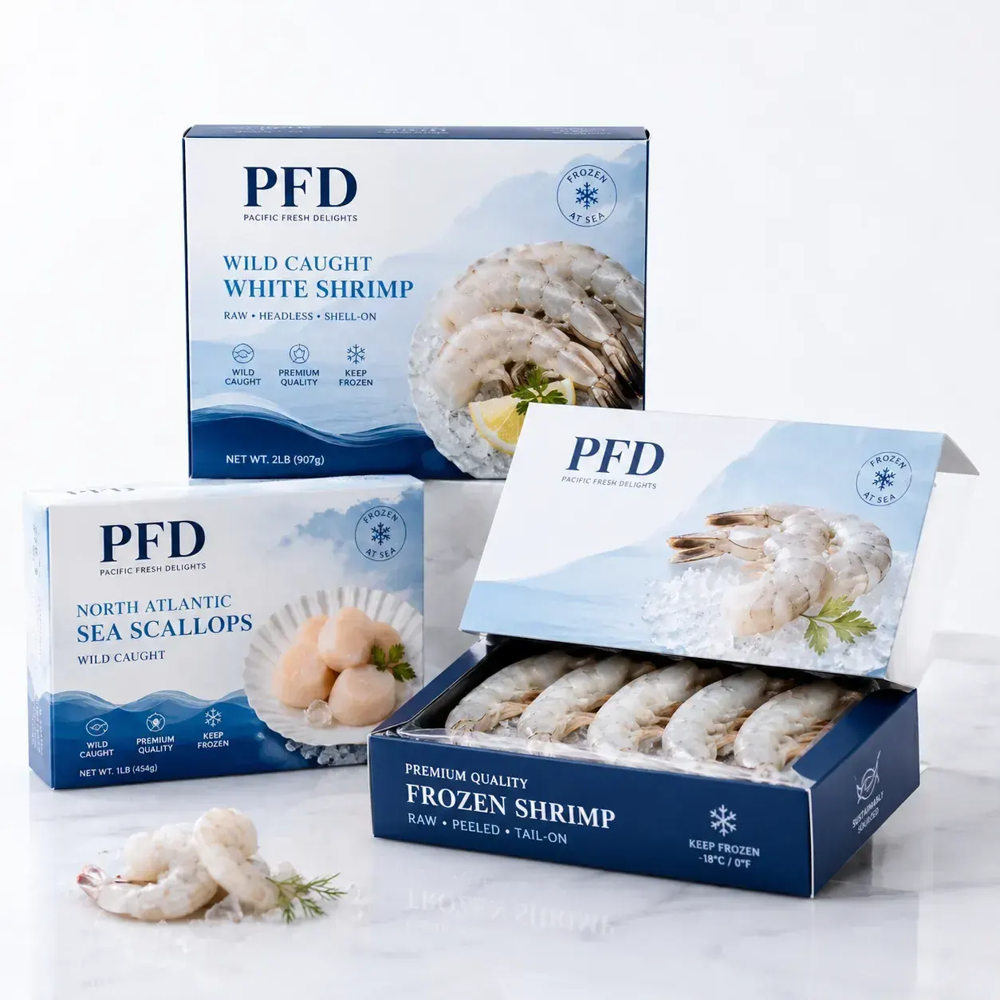

Wholesale moisture-resistant cardboard frozen food boxes for seafood, shrimp, fish fillets and freezer-ready meal products. Custom printed retail cartons with cold-chain friendly board structure and strong shelf presence for export food brands. We support OEM size, material selection, structure recommendation, barcode placement and export packaging for global B2B buyers.

Wholesale moisture-resistant cardboard frozen food boxes for seafood, shrimp, fish fillets and freezer-ready meal products. Custom printed retail cartons with cold-chain friendly board structure and strong shelf presence for export food brands. This product is ideal for Seafood processors, frozen meal brands, supermarket private labels and food export companies. It supports Freezer-grade paperboard with moisture-resistant coating or laminated barrier layer with Cold-chain stability, moisture resistance, vivid freezer-safe graphics, carton efficiency and retail shelf appeal and High-resolution offset printing, anti-scuff coating, multilingual panels and retail barcode integration.
| MOQ | 500 PCS custom printed packaging |
|---|---|
| Material | Freezer-grade paperboard with moisture-resistant coating or laminated barrier layer |
| Features | Cold-chain stability, moisture resistance, vivid freezer-safe graphics, carton efficiency and retail shelf appeal |
| Printing | High-resolution offset printing, anti-scuff coating, multilingual panels and retail barcode integration |
| Applications | Frozen seafood, shrimp, fish fillets, prepared seafood meals, frozen snacks and meal kits |
| Customization | Box dimensions, locking style, board caliper, inner coating, window and compliance labeling panels |
Send product size, quantity, artwork needs, packaging structure and shipping country to Linda Wang for a fast B2B quotation.
WhatsApp Linda Email InquiryMoisture-Resistant Cardboard Frozen Food Boxes | Custom Printed Seafood Packaging Wholesale targets high-intent B2B buyers searching for frozen food boxes, seafood packaging wholesale, moisture resistant cardboard boxes, custom printed frozen packaging, freezer food carton, seafood retail box manufacturer. The page uses clear commercial language, long-tail packaging keywords, material details, customization data and application-specific copy that help both Google and AI search systems understand the product quickly.
Seafood processors, frozen meal brands, supermarket private labels and food export companies.
We can customize dimensions, box depth, paper weight, inner barrier, inserts, brand colors, logo printing, barcode or QR code placement, finishing effects and export carton packing according to your project.
Yes. We use suitable board and coatings designed for freezer storage, cold-chain transportation and moisture exposure.
Yes. We support multilingual artwork, nutrition tables, barcode zones, regulatory text and destination market labeling.
Recommended buyer brief: target food category, package dimensions, product weight or count, preferred paper or fiber material, barrier requirement, print style, quantity, destination market, compliance text and shipping country. MOQ 500 PCS. OEM/customize only.
MOQ 500 PCS - Fast Factory Quote
Click below to contact us quickly by WhatsApp or email. We can help with dieline, samples, printing, materials and worldwide shipping.
Chat on WhatsAppEmail Inquirylinda@colorprintingpackage.com